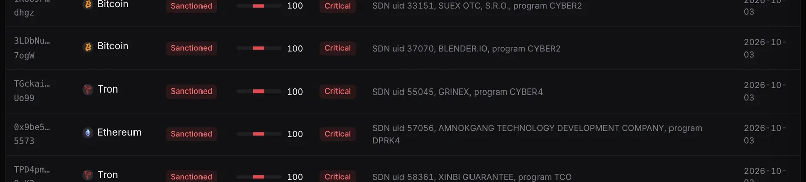
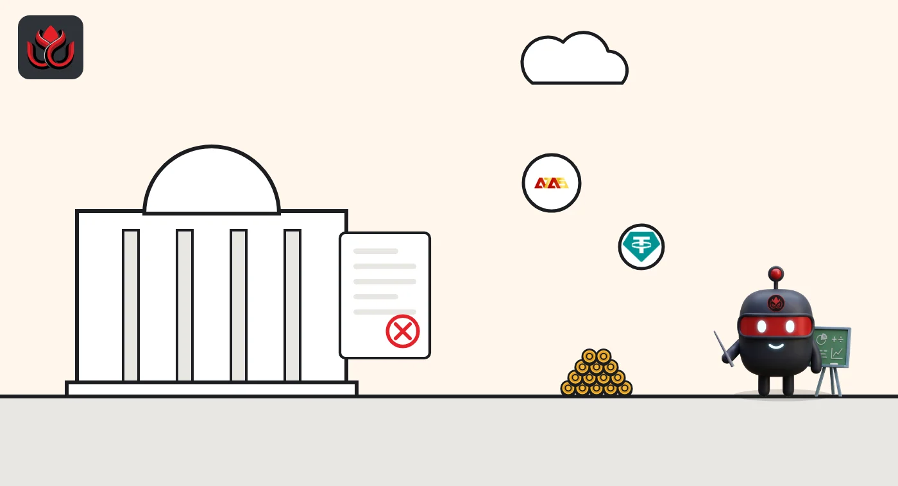

Ruble token A7A5 still trades on Uniswap 15 months after sanctions, for about $1,500 a day
In August 2025, Treasury sanctioned A7A5's issuer along with Garantex and its successor, Grinex. FinCEN's November 6, 2026, MEXC order put new numbers on all three. Public data shows the token still trades in tiny amounts, but it cannot show the transfers between agents.
Key points
- CoinGecko showed an A7A5 trade against USDT on Uniswap on Ethereum at 11:28 p.m. ET on November 6, 2026, with $1,425 of volume in 24 hours.
- CoinGecko lists about 39.24 billion A7A5, worth about $471.7 million, and the implied supply has not changed in its data since July.
- DeepSea's risk list flags Ethereum and Tron addresses tied to OFAC's Garantex and Grinex listings as sanctioned. FinCEN says Grinex was still active as of June 2026.
 What DeepSea's data shows
What DeepSea's data shows
DeepSea's risk list has a "Sanctioned" category with more than 800 flagged addresses. In the part of the list we read, three addresses (two on Ethereum, one on Tron) carry the OFAC entry for Garantex Europe OU and one Tron address carries the entry for Grinex. Each is scored 100, "Critical," and was flagged on October 3, 2026.
DeepSea's live trade feed showed no A7A5 activity by the wallets it tracks. That means none of its smart money, influencer or shark wallets traded the token in the period we checked. It does not mean the token stopped moving.

Data: DeepSea (desea.io), checked November 7, 2026, about 12:35 a.m. ET.
Who was named
On August 14, 2025, Treasury's sanctions office re-designated Garantex and designated Grinex, which Treasury called Garantex's successor, built by Garantex staff. The same action named A7 LLC, A71 LLC and A7 Agent LLC, and Old Vector, the Kyrgyz company that issues A7A5, a token meant to track the Russian ruble. The token itself is not on the list; its issuer is.
FinCEN went further on October 1, 2026, with a proposed ban on U.S. transfers involving the A7 network's agents and an alert listing red flags. Its November 6 order against MEXC cites about $129 million of MEXC activity with Garantex, $4.1 million with Grinex and almost $200 million tied to A7A5, and says Grinex was still active as of June 2026.
What the market data shows
On CoinGecko, A7A5 traded at about $0.0120 at 12:40 a.m. ET on November 7, close to the value of one ruble. Its only listed market was an A7A5/USDT pool on Uniswap V2 on Ethereum. That pool did $1,425 of trades in 24 hours, and the last one was at 11:28 p.m. ET on November 6. A wrapped version, wA7A5, last traded on Uniswap V3 at 11:29 a.m. ET on November 6, with $674 of volume.
Those are tiny numbers next to the $179.1 billion of A7A5 transactions FinCEN counted from February 2025 to June 2026. Most of that, by FinCEN's account, ran through transfers between agents, not public trading pools.
A7A5 market value on CoinGecko
US$ million
2026. Value moves with the ruble price; the implied supply stays near 39.2 billion. Source: CoinGecko.

What we could not check
The direct answer to "are these wallets still moving coins?" lives on block explorers such as Tronscan and Etherscan. We could not open them in this run, so we do not report transfer counts or recent moves for Garantex, Grinex or A7A5 holder wallets. CoinGecko's supply figure can also lag real minting and burning on chain.
LC Insight analysis
This section is our reading of the facts above, not a statement of fact.
- We think the small Uniswap volume says little about A7A5's real use. FinCEN describes a network that settles through agents and transfers, which a trading pool would not show.
- Sanctions on an issuer do not switch off a token on a public chain. That is why FinCEN is now targeting the firms around it, from A7's agents to MEXC.
- A7A5's market value tracks the ruble, not demand. With implied supply flat near 39.2 billion since July, the swings in our chart are exchange-rate moves.
What's next
- Tronscan and Etherscan transfer counts for the A7A5 contracts
- Any change in A7A5 supply on CoinGecko
- FinCEN's final rule on the A7 network after comments closed November 4
- New OFAC listings of Grinex or A7A5 addresses
Disclaimer. This article is based on public information and the sources listed below as of the update time shown. It is for information only and is not investment, legal or tax advice. Figures may change as companies and authorities publish new data.
Sources
- U.S. Treasury, Treasury Sanctions Cryptocurrency Exchange and Network Enabling Sanctions Evasion and Cyber Criminals (August 14, 2025)
- FinCEN, Alert on the A7 Network, FIN-2026-Alert007 (October 1, 2026)
- Federal Register, Proposal of Special Measure Prohibiting the Transmittal of Funds Regarding Transactions Involving the A7 Network's Sub-Agents (October 5, 2026)
- FinCEN, Order: Imposition of Special Measure Prohibiting the Transmittal of Funds Involving MEXC Global (November 6, 2026)
- CoinGecko, A7A5 price, market value and Uniswap markets (API, read November 7, 2026, 12:40 a.m. ET)
- CoinGecko, Wrapped A7A5 (API, read November 7, 2026, 12:40 a.m. ET)
- DeepSea, Scam Alerts risk list, Sanctioned category (read November 7, 2026, about 12:35 a.m. ET)